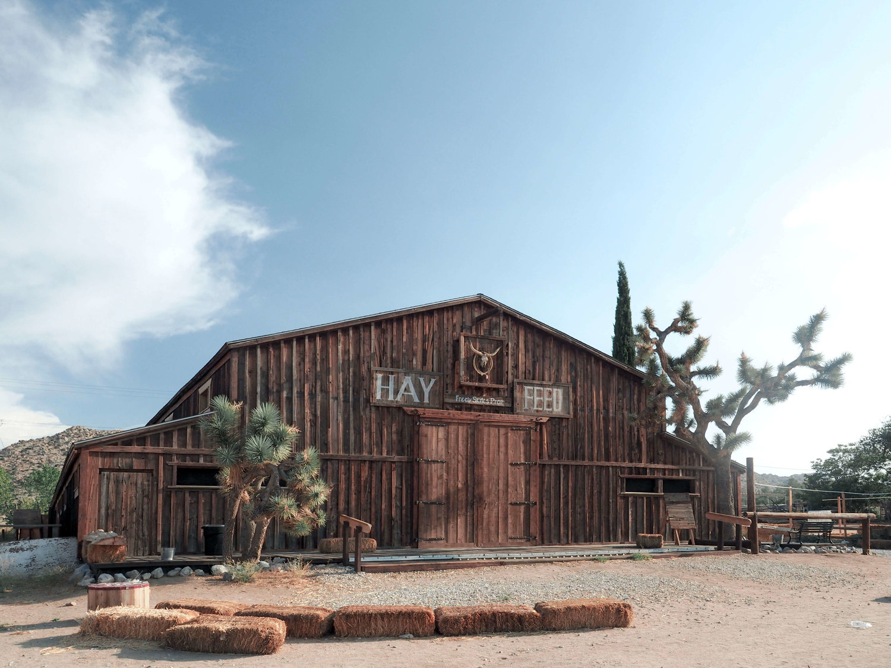
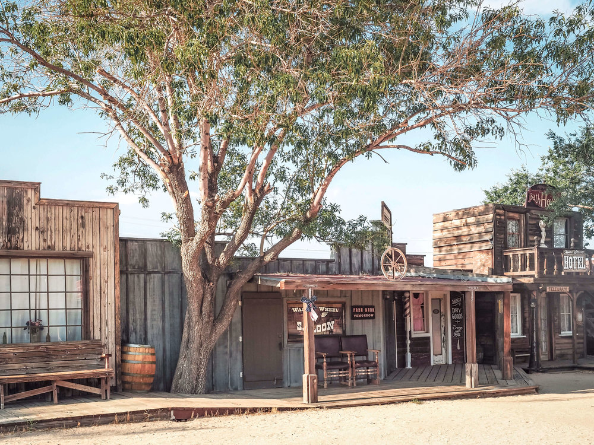
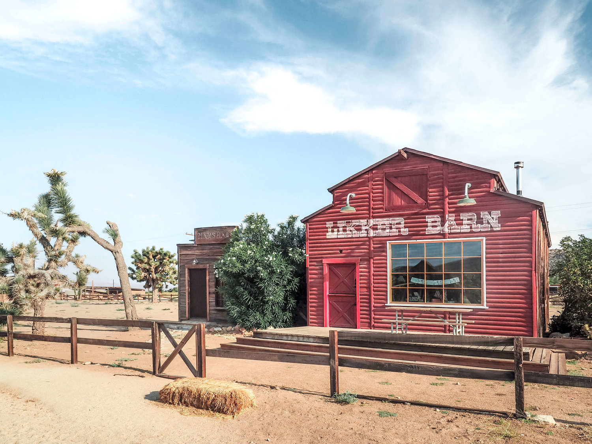

National Park
DECEMBER 12, 2023
2 mins Read
Pioneertown CA: Step Back to the California Old West

In the dessert hills past Yucca Valley lies Pioneertown, CA, an Old West town that has existed for decades but has recently become a popular side trip from Joshua Tree National Park. Back in the 1940’s, western films were abundantly shot in the area and instead of traveling back and forth to Los Angeles, actors like Gene Autry and Roy Rogers (with help from Hollywood investors) decided to build a small town nearby where they could stay while filming. That town then became the “Old West” set for over 50 films of the time. The buildings featured facades modeled after those in the late 1800’s. Past those facades were ice cream parlors and bowling alleys to give the actors activities for their days off. Pioneertown, located on a stretch of road zig-zagging through the desert is completely open to the public. You can pull over in your car and walk down "main street" to be transported back in time.

However, the stretch of buildings is a little eerie, especially when you visit during off-peak hours. There are wheelbarrows, fake crows, and other western props scattered around as you pass an old post office, sheriff’s office, town bank and saloon. We actually saw tumbleweed roll past us. From Thursday-Sundays, the small town is a bit busier with local artisans and pottery-makers filling the buildings behind the western facades and selling desert-inspired artwork and hand-crafted items to visitors. During the summer, Wild West reenactments take place in the streets. Despite being such a strange place to visit that seems to be frozen in time, many celebrities and musical acts have made their way to this little desert oasis to play at the local bar in Pioneertown, Pappy and Harriet’s. Paul McCartney, Queens of the Stone Age, and Vampire Weekend have all played at the small but notable music venue.

Pioneertown was a practical idea in the 40's that has since become known for being an off-the-wall stop along one of California’s designated scenic routes. Stop by for a quick Instagram pic or stay at the nearby Rimrock Ranch cabins for a true desert vacation.